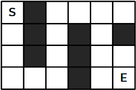
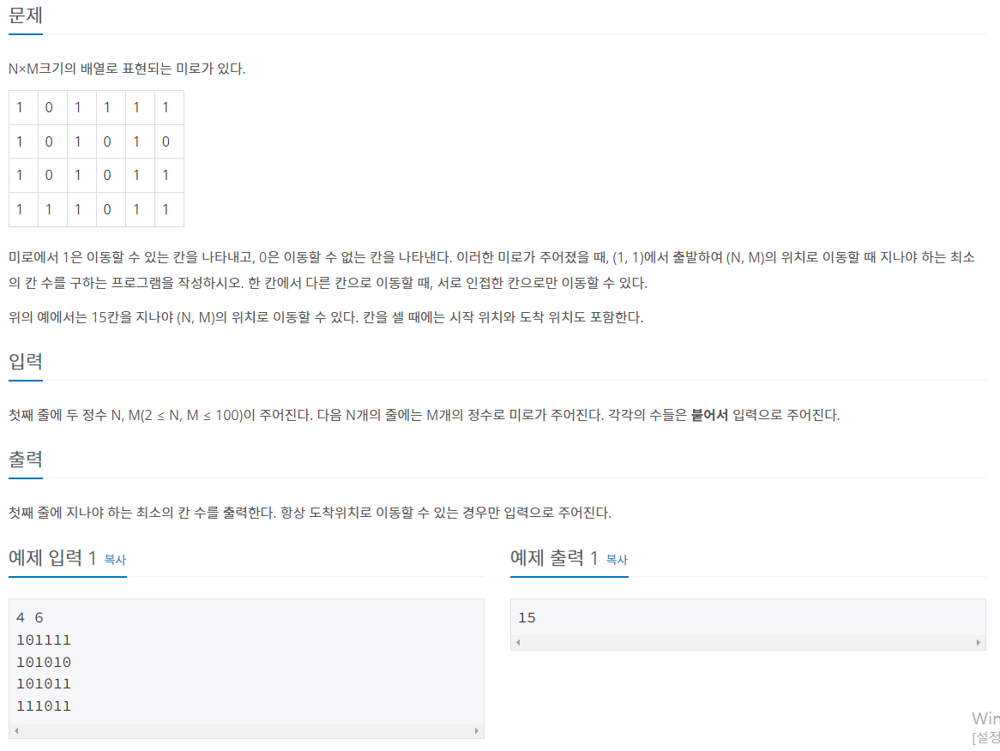
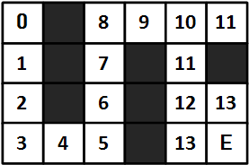
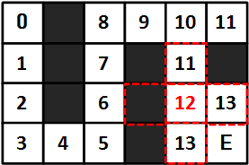
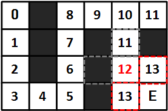

* 개인적인 공부 내용을 기록하는 용도로 작성한 글 이기에 잘못된 내용을 포함하고 있을 수 있습니다.
다음 포스팅은 BaaaaaaaaarkingDog님의 실전 알고리즘 강좌 0x09강-BFS 내용을 공부한 뒤 개인적인 공부 기록 용도로 다시 정리한 글 입니다.
내용 출처 : BaaaaaaaarkingDog | [실전 알고리즘] 0x09강 - BFS (encrypted.gg)
[실전 알고리즘] 0x09강 - BFS
안녕하세요 여러분, 드디어 올 것이 왔습니다. 마음의 준비를 단단히 하셔야 합니다.. 드디어 실전 알고리즘 강의에서 첫 번째 고비에 도달했는데 이 강의와 함께 이번 고비를 잘 헤쳐나가면 좋
blog.encrypted.gg
문제 출처 : 2178번: 미로 탐색 (acmicpc.net)
2178번: 미로 탐색
첫째 줄에 두 정수 N, M(2 ≤ N, M ≤ 100)이 주어진다. 다음 N개의 줄에는 M개의 정수로 미로가 주어진다. 각각의 수들은 붙어서 입력으로 주어진다.
www.acmicpc.net
BOJ 2178 미로탐색 문제는 BFS의 최단 거리 알고리즘을 이용해 풀이할 수 있다.
문제는 간단하다 좌측 상단 시작점 (0, 0) 에서 우측 하단 (N, M) 까지 가는 길 중 최단 거리로 가는 방법을 구하는 문제이다.
 
BFS의 기본 개념에서 살짝만 응용하면 간단하게 해결 가능하다.
[BFS 구현] _ LINK
1. 시작하는 칸을 큐에 넣고 방문 표시를 남긴다.
2. 큐에서 원소를 꺼내어 해당하는 칸의 상화좌우로 인접한 칸에 대하여 3번을 진행한다.
3. 해당 칸을 이전에 방문했다면 아무 것도 수행하지 않고, 처음 방문 했다면 방문 표시를 남기고 해당 칸을 큐에 삽입한다.
4. 큐가 빌 때 까지 2번을 반복한다.
모든 칸이 큐에 한 번씩 들어가게 되기에 시간 복잡도는 칸이 N개 일때 O(N)이다.
보드의 정보를 저장하는 board 배열 방문 여부를 저장하는 vis 배열 외에, 각 칸의 거리를 저장하는 dis 배열을 추가적으로 선언하여 칸마다 거리를 저장해 주면 된다.

cur(커서)가 가리키는 칸의 값에서 1을 더해주면 다음 칸의 거리를 구할 수 있다. 예를들어 현재 커서가 12를 가리키고 있다면 상하좌우를 탐색할 것이다.

이때 좌측은 유효하지 않은 칸 (board[nx][ny] != '1') 이고, 위측은 이미 지나온 칸 (vis[nx][ny] != 0) 이므로 continue 한다.

다음으로 우측과 아래쪽은 유효한 칸 이므로 커서가 가리키는 칸의 값 (12) 에 1을 더해서 13으로 초기화 해 준다.
while (!Q.empty()) {
pair<int,int> cur;
cur = Q.front(); Q.pop();
for (int dir = 0; dir < 4; dir++) {
int nx = cur.X + dx[dir];
int ny = cur.Y + dy[dir];
if (nx < 0 || nx >= n || ny < 0 || ny >= m) { continue; } // 범위 밖일 경우 넘어간다.
if (vis[nx][ny] || board[nx][ny] != '1') { continue; } // 이미 방문한 칸이거나, 유효 칸이 아닌 경우 넘어간다.
vis[nx][ny] = 1; // 방문 표시
dis[nx][ny] = dis[cur.X][cur.Y] + 1; // 커서가 가리키는 칸에서 + 1
Q.push({nx,ny}); // 큐에 푸시
}
#CODE
#include <bits/stdc++.h>
using namespace std;
#define X first
#define Y second
string board[502];
bool vis[502][502];
int dis[502][502];
int dx[4] = {1, 0, -1, 0};
int dy[4] = {0, 1, 0, -1};
int main() {
ios::sync_with_stdio(0);
cin.tie(0);
int n, m;
cin >> n >> m;
for (int i = 0; i < n; i++) {
cin >> board[i];
}
// 시작하는 칸을 큐에 넣고 방문 표시를 한다.
queue<pair<int,int>> Q;
Q.push({0, 0});
vis[0][0] = 1;
dis[0][0] = 0;
while (!Q.empty()) {
pair<int,int> cur;
cur = Q.front(); Q.pop();
for (int dir = 0; dir < 4; dir++) {
int nx = cur.X + dx[dir];
int ny = cur.Y + dy[dir];
if (nx < 0 || nx >= n || ny < 0 || ny >= m) { continue; } // 범위 밖일 경우 넘어간다.
if (vis[nx][ny] || board[nx][ny] != '1') { continue; } // 이미 방문한 칸이거나, 유효 칸이 아닌 경우 넘어간다.
vis[nx][ny] = 1; // 방문 표시
dis[nx][ny] = dis[cur.X][cur.Y] + 1; // 커서가 가리키는 칸에서 + 1
Q.push({nx,ny}); // 큐에 푸시
}
}
// for (int i = 0; i < n; i++) {
// for (int j = 0; j < m; j++) {
// cout << dis[i][j];
// }
// cout << '\n';
// }
cout << dis[n-1][m-1] + 1;
return 0;
}